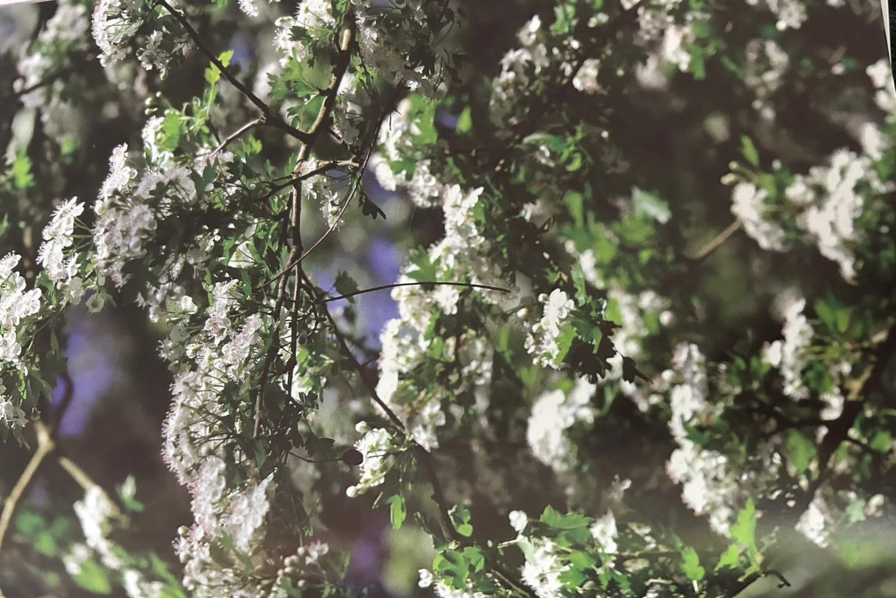

Groepen › Oude Wereld
29. Zuid-Spanje en Noord-Marokko, Straat van Gibraltar

Zuid-Spanje en Noord-Marokko hebben wel wat bijzondere boomsoorten gemeen, een indicatie dat de landstreken aan beide zijden van de zeeëngte van Gibraltar ooit verbonden zijn geweest. Een typisch voorbeeld is de Spaanse of Pinsapo-zilverspar, die pas in de 19de eeuw in kleine relictpopulaties werd ontdekt in de traditionele regio Sierrannia de Ronda, in Andaloesië. Een kleine eeuw later werden grotere en mooiere populaties herkend in het Rifgebergte in Marokko. De Spaanse zilverspar groeit graag samen met Zeeden, Aleppoden, Kurkeik, Portugese eik en Steeneik. Het oude exemplaar in Groep 29A is een Vilmorin-zilverspar, een kruising van de Spaanse met de Griekse zilverspar. Hij is mogelijk een wereldkampioen in omvang, In vergelijking met de jongere originele pinsapo’s eromheen toont hij aan dat hybriden vaak sneller en groter uitgroeien dan de oudersoorten. Aan de overkant van de weg staan Spaanse zilversparren van Marokkaanse oorsprong, hier worden de ondersoorten ‘marocana’ en ‘tazaotana’ onderscheiden, de laatste genoemd naar de berg Jebel Tazaot in het Rif. Daar groeien ze in gezelschap van Atlasceders, die in groep 29B vooralsnog ontbreken, maar ze zijn niet ver weg. .
Uit het boek
2,33 ha · 16 soorten · 408 bomen · weerstations Ronda en Bab Taza
- De Spaanse zilverspar, en een Vilmorin-zilverspar die volgens de American Conifer Society wereldkampioen van zijn soort is.

Bron: Geografisch Arboretum Tervuren. Een wereldreis rond bomen (2020), p. 224 en volgende.
Deelgroepen
- 29A – Andalousië
- 29B – Marokko
Soorten in deze groep (14)
- Crataegus monogynaEénstijlige meidoorn · 86 bomen
- Berberis vulgarisZuurbes · 25 bomen
- Pinus pinasterZeeden · 23 bomen
- Taxus baccataGewone taxus · 16 bomen
- Abies marocanaMarokkaanse zilverspar · 11 bomen
- Abies pinsapoSpaanse zilverspar · 11 bomen
- Prunus mahalebWeichselboom · 11 bomen
- Juniperus oxycedrus subsp. oxycedrusStekelige jeneverbes · 10 bomen
- Quercus ilexSteeneik · 7 bomen
- Celtis australisEuropese Netelboom · 2 bomen
- Abies x vilmoriniiVilmorinzilverspar · 1 boom
- Quercus faginea subsp. fagineaPortugese eik · 1 boom
- Quercus pyrenaicaPyrenese eik · 1 boom
- Quercus suberKurkeik · 1 boom
Tekst en foto: arboretum-tervuren.be (Koninklijke Schenking), met toestemming gebruikt.